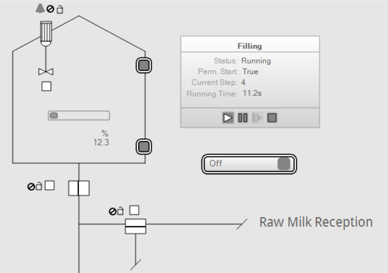

Running the Sequence
Now that the canvas is opened online and ready to run, let’s start the sequence.
Starting the Filling sequence

|
The start of the sequence can also be done by clicking the Play button located on the Start Filling sHead faceplate. |
The sequence starts, the steps are activated after one other as expected.

|
NOTE:
Notice that the graphic of the valves has been correctly set since they all take the right open position to let enter the whole milk.  |
To follow the progression of the sequence, check the animation of their steps. It is then possible to know:
-
The amount of time the steps are or have been activated: The time is given in seconds in the bottom right of each step. The time indicated in the Start Filling sHead is the total time the sequence is or have been running.
-
The status of the steps: The status of a step is given by the color of its background.
-
White: The step is active.
-
Light grey: The step is completed and left.
-
Dark grey: The step hasn’t been activated yet.
When the sequence is completed, then the Start FillingsHead background is in light grey since not running anymore. The End sTerminate background however is white since the completed status is active.
-

|
The Filling sequence is proceeding correctly and the tank is filling up. When the expected value is reached, 90%, the valves are closed and the agitator is turned OFF.
The TR1LT01.high alarm and TR1LSH01 become active since the 90% level is exceeded. Acknowledge them. |
Resetting the Level
Now that the expected level is reached, the LevelHigh input variable of TankFillingSequence is TRUE.
|
|
NOTE:
As detailed in the topic Filling Sequence Definition, this input is used to permit the sequence. As it is active, the sequence cannot be started, thus the Play button of the sequence overview is disabled. |
To be able to start again the sequence, the level of whole milk should be reduced below the max level value, 90%. To do so, turn ON ResetButton like in the topic Simulating Connections.
|
|
Once done, the level of whole milk in the tank will be reduced until reaching 0% again. |
Starting, Stopping and Restarting the Sequence
As the level has been reset, the Play button gets accessible, then start the Filling sequence again. When the filling of the tank occurs, click on the Stop button.
As defined in the topic Start the Stop Sequence Step, the Stop sequence is started when the Stop of the Filling sequence is ordered. So when the Stop button is triggered, the Stop sequence begins regardless of the current tank level.
Click on the Stop button and notice that the filling stops correctly. As the sequence is stopped before reaching 90%, the permission is still TRUE which means that the sequence can be started again afterwards.
|
|
After achieving these actions, you know how to control sequence online through the HMI. You can keep experimenting the sequence on your own by modifying the expected value, by testing each permissive condition and so on. |
All the main information, tools and tips about EcoStruxure Automation Expert, the libraries SE.AppSequence and SE.AppCommonProcess have been transmitted. The Getting Started is now finished. Thank you for having follow it.